Chapter 5 : Boolean Algebra (I) (Continued)
5.7 Switching Diagrams (Continued)
5.7.1 AND Function (or AND gate) (Continued)
Truth table for 3-input AND gate (D = A.B.C):
| A | B | C | D |
|---|---|---|---|
| 0 | 0 | 0 | 0 |
| 0 | 0 | 1 | 0 |
| 0 | 1 | 0 | 0 |
| 0 | 1 | 1 | 0 |
| 1 | 0 | 0 | 0 |
| 1 | 0 | 1 | 0 |
| 1 | 1 | 0 | 0 |
| 1 | 1 | 1 | 1 |
5.7.2 OR Function (or OR gate)
The OR gate circuit symbol is as follows:
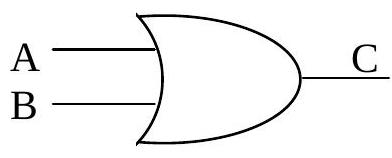The analogy of an OR gate is as follows:
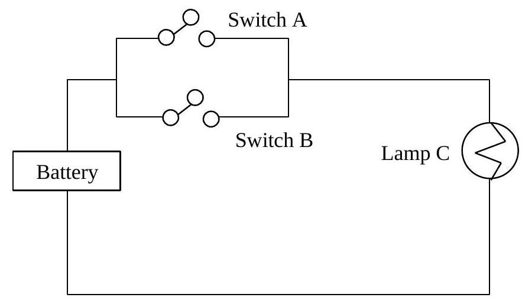| Switch A | Switch B | Lamp C |
|---|---|---|
| OFF (0) | OFF (0) | OFF (0) |
| OFF (0) | ON (1) | ON (1) |
| ON (1) | OFF (0) | ON (1) |
| ON (1) | ON (1) | ON (1) |
It can also be represented by the following truth table:
| A | B | C = A+B |
|---|---|---|
| 0 | 0 | 0 |
| 0 | 1 | 1 |
| 1 | 0 | 1 |
| 1 | 1 | 1 |
That is, an OR gate output C=1 if either A=1 OR B=1. Otherwise C=0
Mathematically, this can be expressed in a boolean equation as:
or
5.7.3 NOT Function (or NOT gate)
The NOT gate circuit symbol is as follows:
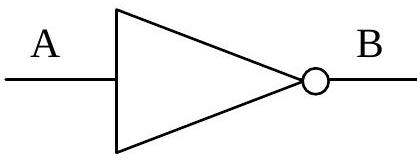The action of a NOT gate is quite simple. It functions like an inverter. That is, the output is the inverted value of the input. For example, if A=0 then B=1, and if A=1 then B=0.
The truth table is as follows:
| A | B = $\overline{A}$ |
|---|---|
| 0 | 1 |
| 1 | 0 |
Mathematically, this can be expressed in a boolean equation as:
Note: $\overline{A}$ can also be represented as A'.
5.7.4 Other Logical Functions
AND, OR and NOT are known as the basic gates. There are other gates and logical functions used in computers which are built from the three basic gates.
- NAND function (i.e. NOT-AND function)
- NOR function (i.e. NOT-OR function)
NAND and NOR gates are known as the universal building elements which are used to build more complex logical functions like the Adder (which we will cover later in the chapter).
NAND gate
The NAND gate circuit symbol is as follows:
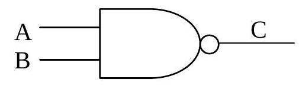Mathematically, this can be expressed in a boolean equation as:
The truth table is as follows:
| A | B | A . B | C = $\overline{A \cdot B}$ |
|---|---|---|---|
| 0 | 0 | 0 | 1 |
| 0 | 1 | 0 | 1 |
| 1 | 0 | 0 | 1 |
| 1 | 1 | 1 | 0 |
The 3-input NAND gate circuit symbol is as follows:
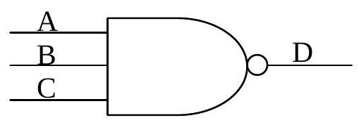The truth table is as follows:
| A | B | C | A.B.C | D = $\overline{A.B.C}$ |
|---|---|---|---|---|
| 0 | 0 | 0 | 0 | 1 |
| 0 | 0 | 1 | 0 | 1 |
| 0 | 1 | 0 | 0 | 1 |
| 0 | 1 | 1 | 0 | 1 |
| 1 | 0 | 0 | 0 | 1 |
| 1 | 0 | 1 | 0 | 1 |
| 1 | 1 | 0 | 0 | 1 |
| 1 | 1 | 1 | 1 | 0 |
NOR gate
The NOR gate circuit symbol is as follows:
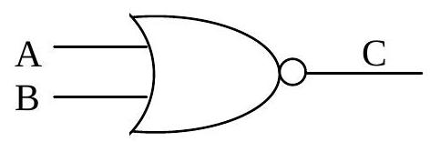Mathematically, this can be expressed in a boolean equation as:
The truth table is as follows:
| A | B | A + B | C = $\overline{A+B}$ |
|---|---|---|---|
| 0 | 0 | 0 | 1 |
| 0 | 1 | 1 | 0 |
| 1 | 0 | 1 | 0 |
| 1 | 1 | 1 | 0 |
NAND gate (Universal gate)
NAND gate can be modified to function as NOT gate, OR gate.
NOT function:
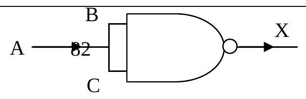Note: B, C inputs follow from A.
| A | B | C | X = $\overline{B \cdot C}$ |
|---|---|---|---|
| 0 | 0 | 0 | 1 |
| 1 | 1 | 1 | 0 |
OR function:
$X = A + B$
$= \overline{\overline{A+B}}$ (Double negation)
$= \overline{\overline{A} \cdot \overline{B}}$ (DeMorgan's Law)
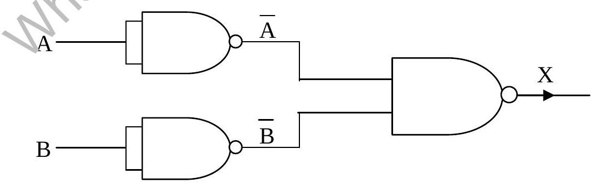5.8 Combining Logic Gates
Many everyday digital logic problems use several logic gates. The most common pattern of gates is shown below. This pattern is called the AND-OR pattern. The outputs of the AND gates (1 and 2) are used as inputs to the OR gate (3). You will notice that this logic circuit has three inputs (A, B and C). The output of the entire circuit is labelled as Z.
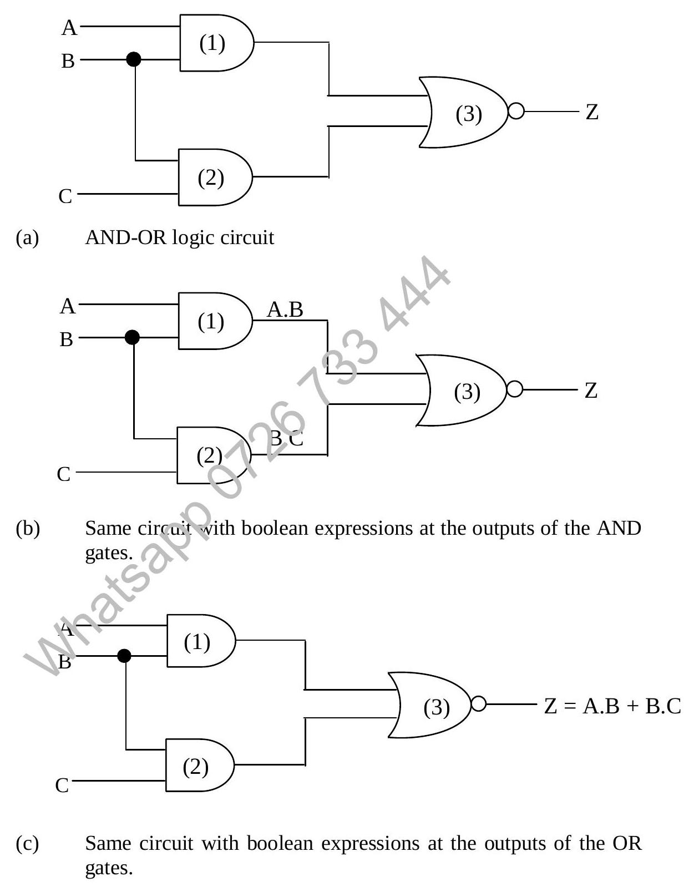Let us first determine the boolean expression that will describe this logic circuit. Begin the examination at gate (1). This is a 2-input AND gate. The output of this gate is A.B (A AND B). This expression is written at the output of gate(1) in figure (b) above.
Gate(2) is also a 2-input AND gate. The output of this gate is B.C (B AND C). This expression is written at the output of gate(2). Next the output of gate(1) and (2) are OR-ed together by gate(3). Figure (c) shows A . B being OR-ed with B . C.
The resulting boolean expression is $Z = A \cdot B + B \cdot C$. It is read as (A AND B) OR (B AND C). You will notice that the AND-ing is done first, followed by the OR-ing.
Example: A logic circuit is given as follows:
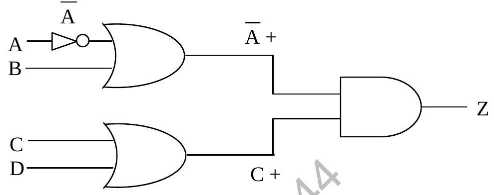The boolean expression is $Z = (\overline{A} + B) \cdot (C + D)$
Example: A logic circuit is given as follows:
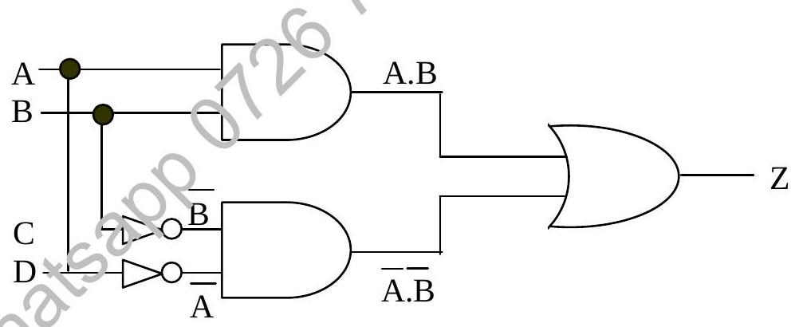The boolean expression is $Z = A \cdot B + \overline{A} \cdot \overline{B}$
5.8.1 Analysing Circuits
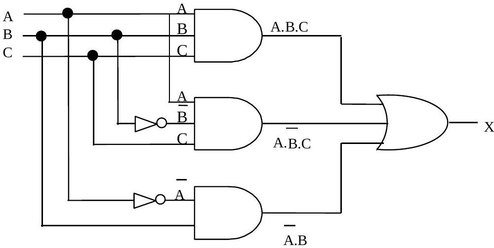From the diagram, we see that each of the outputs from the 3 AND gates will be a '1' or a '0' and they serve as the inputs to the 'OR' gate which is represented by the '+' sign.
Switching circuits are often over-complicated because they duplicate or even triplicate or quadruplicate functions. The results of rigorous simplification can, however, be quite startling.
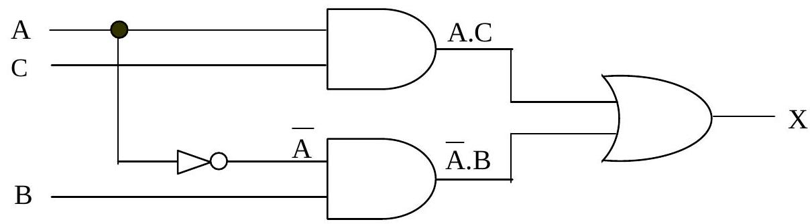Simplified circuit
5.9 The Algebra of Logic
We shall now investigate how to achieve such results using Boolean Algebra. Note that in two-state logic, we have variables and two operators, '+' as in A + B for 'OR' and '.' as in A.B for 'AND'.
Using these symbols, we have basic identities:
$A + \overline{A} = 1$
$A \cdot \overline{A} = 0$
$A + 0 = A$
$A \cdot 1 = A$
$A \cdot 0 = 0$
$A + 1 = 1$
With reference to SETS, where $\cup$ represents union and $\cap$ represents intersection.
$A + B = B + A \quad (A \lor B = A \cup B = B \cup A)$
$A \cdot B = B \cdot A \quad (A \land B = A \cap B = B \cap A)$
$\overline{A} \quad (\text{NOT } A = A')$
Further examples are illustrated using Venn diagrams:
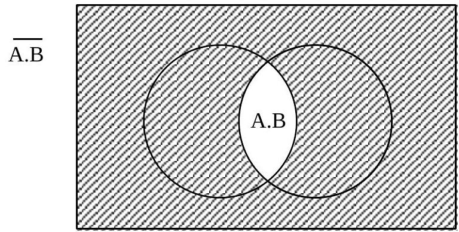A.B and its complement or 'NOT' (shaded region)
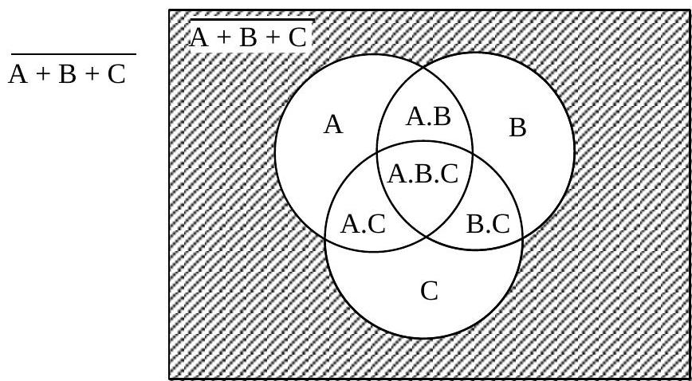A + B + C and its complement or 'NOT' (shaded region)
Points to Remember (Boolean Algebra I)
Logic Operators / Gates / Set Notation
| Operator | Gate Symbol | Boolean | Set Notation |
|---|---|---|---|
| AND | $\land$ | A . B | $A \cap B$ |
| OR | $\lor$ | A + B | $A \cup B$ |
| NOT | $\sim$ or $\neg$ | $\overline{A}$ or A' | A' |
AND operator returns true if all inputs are true.
OR operator returns true if at least one input is true.
Truth Table is used to show all possible outputs with all possible combination of inputs.
n Inputs give rise to $2^n$ combinations
- 2 Inputs give rise to 4 ($=2^2$) combinations
- 3 Inputs give rise to 8 ($=2^3$) combinations
- 4 Inputs give rise to 16 ($=2^4$) combinations